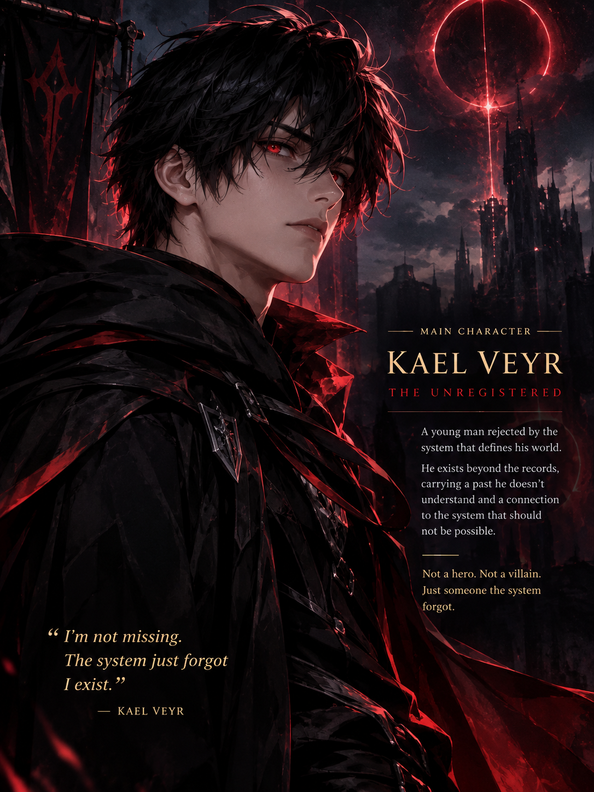

Chapter 01
The Man Who Failed to Awaken
The ceremony ends. The questions begin.
READ CHAPTER 1 →Everyone has a place in the system. Every soul has a record. Every awakened has a future. So what happens when the system cannot remember you?
An unexpected presence has been detected. The system is attempting to verify an identity that should not exist.
In a world where awakening determines a person's future, Kael Veyr faces a result no one understands. The system searches for him, detects him, and then fails to recognize his existence.
An impossible message. A forgotten identity. And a mystery buried deeper than anyone dares to look.
Six chapters are published on Webnovel. Begin with Chapter 1 and follow Kael Veyr's journey as the mystery of the unregistered anomaly unfolds.
The ceremony ends. The questions begin.
READ CHAPTER 1 →The story continues beyond the awakening ceremony.
READ CHAPTER 2 →A warehouse job, a sealed container, and a record that should not exist.
READ CHAPTER 3 →A record surfaces that challenges what the world believes about Kael.
READ CHAPTER 4 →Being ordinary may come at a cost Kael cannot afford to ignore.
READ CHAPTER 5 →Kael faces a test that may reveal more than he is ready to learn.
READ CHAPTER 6 →The records remain incomplete. But something has begun to notice the anomaly.
AWAITING RELEASEChapter 7 will be linked here when it is published on Webnovel.

A young man rejected by the system that defines his world. His true connection to it remains unknown.
Not a hero. Not a villain. Just someone the system forgot.
Some identities are best discovered through the story. Their histories will be revealed at the right time.
A defining event that shapes the paths people are expected to follow.
A force that records identities and governs the world's accepted rules.
What happens when a person exists beyond the records? The answer remains hidden.
This section will expand as the world is revealed in the novel. Spoilers will be handled carefully.